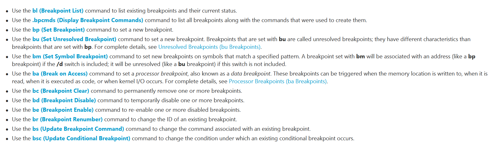
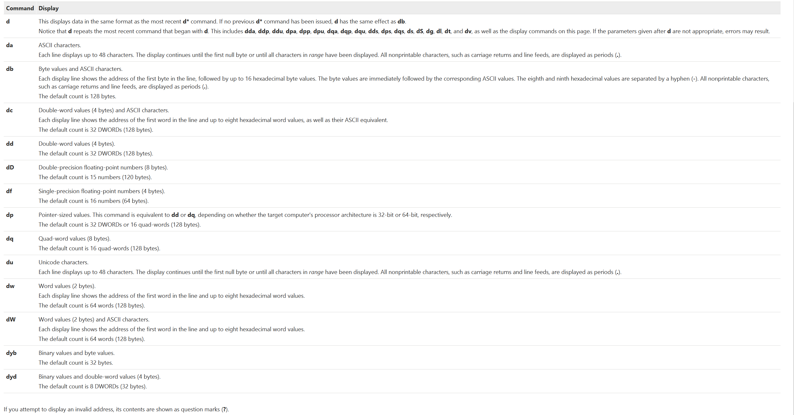
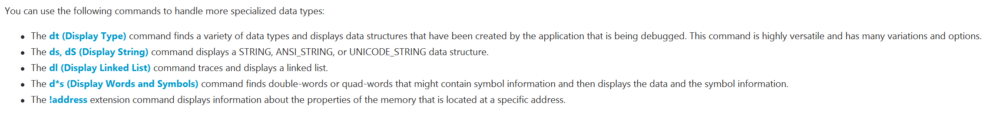

查看变量
- dv, Display Variable的缩写, 查看局部变量.
- dv /i, 查看局部变量, 并显示符号的类型和参数类型.
- dv /V, 查看局部变量, 并显示变量的存储位置.
- dv /V VariableName, 指定需要查看的变量的名字
- dt, Display Type的缩写. 当变量的类型为复合类型, 比如说结构体或者类, 那么dv命令只会显示变量的地址. dt命令可以将一块内存按照某个数据类型来解析, 其中的数据类型需要作为参数被传递给dt命令. (dt this)
查看线程
- ~, 简洁的显示当前进程的所有线程
- ~., 表示当前进程
- ~#, 表示异常或者产生调试时间的线程
- ~*, 表示所有线程
- ~1, 表示一号线程
- ~2 s, 选择2号线程作为当前线程
- ~3 f, 冻结3号线程
- ~3 u, 解冻3号线程
- ~2 n, 挂起2号线程
- ~2 m, 恢复2号线程
- ~*e ~clrstack, 遍历每个线程, 一次输出它们的托管调用栈
- !threads, 查看所有的托管线程
断点
 deferred的意思是”还没加载”, 这时候需要用bu命令。
断点支持三种语法, 虚拟地址、函数偏移、源码:
0:000> bp 0040108c
0:000> bp main+5c
0:000> bp `source.c:31`
对C++成员函数来说:
0:000> bp MyClass::MyMethod
0:000> bp MyClass__MyMethod
0:000> bp @@( MyClass::MyMethod )
源码路径的语法：
`[[Module!]Filename][:LineNumber]`
如果文件名相同, 需要加上上一级目录的名称予以区别, 否则就用第一个匹配的。
总的来说, windbg的断点难用的很。
条件断点的语法更是惨绝人寰，不建议使用。
Reading and Writing Memory
内存可以通过地址或者变量名直接引用。
读命令: d*(d是display的意思)


# mmhighestuseraddress是一个变量, 查看这个变量的地址
kd> dp nt!mmhighestuseraddress L1
81f71864 7ffeffff
这表明用户态的地址空间上限是0x7FFEFFFF(32位系统)
内存泄露
查看内存使用情况:
- !address -summary
查看堆详情:
- !heap -s 查看堆详情
图片
- !heap -stat -h 堆地址 打印这个堆的使用情况
- !heap -flt s [堆size] 打印size大小的堆的数量、地址
- !heap -p -a 堆地址 打印这个堆是哪个函数申请的
排查野指针
前提: 开启Gflag全页堆
// 堆栈
VZVCamDshow!DllMain+0xd8d:
00007ffe`7270313d 8982d8000000 mov dword ptr [rdx+0D8h],eax ds:00000267`e03d0fd8=????????
访问 00000267`e03d0fd8时crash, 先看一下这个地址的情况。
!address 00000267`e03d0fd8
Usage: PageHeap
Base Address: 00000267`e03cf000
End Address: 00000267`e03d2000
Region Size: 00000000`00003000 ( 12.000 kB)
State: 00002000 MEM_RESERVE
Protect: <info not present at the target>
Type: 00020000 MEM_PRIVATE
Allocation Base: 00000267`e0160000
Allocation Protect: 00000001 PAGE_NOACCESS
More info: !heap -p 0x267fbcd1000
More info: !heap -p -a 0x267e03d0fd8
句柄泄露
分析命令 1、!htrace -enble。 2、执行重现过程，让进程句柄泄漏 3、通过!htrace -diff 找出有问题的栈。
参考文档
https://learn.microsoft.com/en-us/windows-hardware/drivers/debugger/using-umdh-to-find-a-user-mode-memory-leak
https://learn.microsoft.com/en-us/windows-hardware/drivers/debuggercmds/-heap
https://www.codeproject.com/Articles/6489/Debug-Tutorial-Part-3-The-Heap
https://bsodtutorials.wordpress.com/2014/01/06/debugging-heaps-and-heap-internals-part-2/
https://icepng.github.io/2017/02/25/HeapAlloc/
https://blog.csdn.net/hgy413/article/details/7620599
https://illmatics.com/Understanding_the_LFH_Slides.pdf
https://www.i.u-tokyo.ac.jp/edu/training/ss/lecture/new-documents/Lectures/16-UserModeHeap/UserModeHeapManager.pdf
https://www.rapid7.com/blog/post/2019/06/12/heap-overflow-exploitation-on-windows-10-explained/
https://illmatics.com/Understanding_the_LFH.pdf
https://www.blackhat.com/docs/us-16/materials/us-16-Yason-Windows-10-Segment-Heap-Internals.pdf
https://cs.wellesley.edu/~cs240/f16/slides/allocator.pdf
https://stackoverflow.com/questions/50711102/how-is-the-header-of-a-block-formatted-in-heap